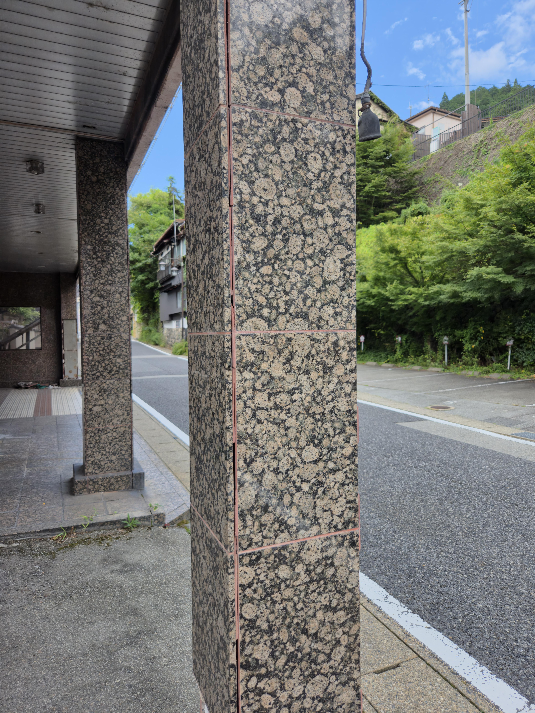
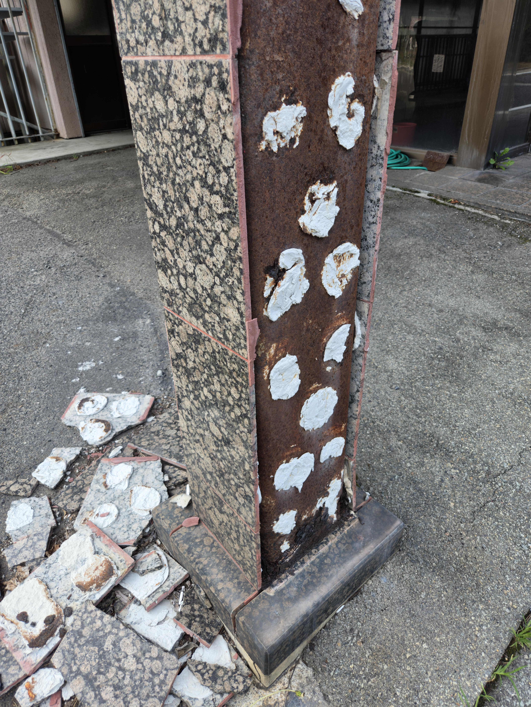

동조선도 사용하는 정식 시공방법 입니다만?


동조선도 사용하는 정식 시공방법 입니다만?
본드발이가 습기에 취약하기 때문에 화장실, 베란다에선 못 쓴다 그러면
압착붙임 하면 된다 이거지 사람들 반응은
맨날 몰탈 그거 얼마 하지도 않는데 그거 갖고 비용 절감 얼마나 한다고 그런거 아니다
떠발이가 정식 시공이다 오히려 기술 필요하다 그러는데
기술 필요한건 사실 다 똑같고
붙임 시간 문제 때문에 압착붙임 안 하는 걸텐데
오히려 그런 쪽으로 따지면 그거야말로 기술이 더 필요한거 아니냐는 의문도 일반인들 입장에서 들 만 하고.
놉 압착이 훨씬쉽고 그냥 일반인도 가능한 시공임
떠발이가 더 비싼이유는 바탕면 평활도를 잡아야하는데 그게 타일공이 아니라 미장공을 따로 불러서 해야하니
사람을 2번쓰니 2배넘게 비용이 든다하는거
ㅇㅇ 그니까 일반인들 반응은 이렇단거
해외에선 벽 그라인딩하고서 압착붙임 하는데 왜 국내만 기술 얘기하며 떠발이만 하느냐? 애초에 벽 그라인딩은 왜 제대로 안 하느냐?
처음에야 떠발이로 인한 시공 불량 얘기가 나오겠지만, 대화가 길어지면 여기서부터 말이 나오겠지.
결국 사람들 분노와 혐오의 원인은 떠발이 불량시공이지만
그게 나온 원인은 복합적이니까
결국 일반인들도 비용2배 넘게든다하면 떠발이로 해달라할텐데 뭐...
전원주택이나 빌라면 그 말이 맞을 수 있고
사람들이 인테리어할 때 저렴하게 하려는거 생각하면 그 말 맞는데
아파트 구매할 때는 반응이 달라진단거지.
나는 건축하는 사람 입장에서 이해가 안 될만한 부분을 물어보기에 일반인들의 입장을 설명한건데
결국 돈 때문에 떠발이 하는건데 기술 부족으로 인한 불량 시공이 나오는거 감수하란 식으로 나오면 사람들 반응이 좋지는 않을거야.
뭐라하는게 아니고 나도 순전히 이래서 사람들 반응이 안 좋아진거다 말하는거라
사람 두번 써서 비용이 많이 나온다.
뭐 그거 맞는 말이지.
한국이 사실 기술직의 기술에 대한 비용, 서비스비용 후려치려고 드는 대중 인식도 분명히 있고.
근데 이제 또 일반인들 입장에선
우리가 건축, 인테리어를 자주 할 일도 없고(자영업자 제외)
사실 대중적인 거주 형태인 아파트의 구매 이유가 그런걸 신경쓰지 않으려고 하는 것도 분명히 있는데
아파트에서 이런 하자가 자주 발생한다.
그런데 그 아파트 가격이 싸지도 않다.
심지어 고급 라인업 분류에 들어가는 아파트 브랜드에서도 문제가 발생해서 뉴스에 나온다.
이러면 기술직에 대한 천시로 인한 비용 후려치기도 이해가 안 된다는 반응이 나올 수도 있는거지.
대화가 길어지면 결국 끝에 가서는 우리는 대출껴서 수억 수십억 들여서 집 사는데 회사에서 그거 인건비 아껴서 이런 불량 시공이 나온다는 말이냐? 그냥 사람 더 써서 하라! 는 반응이 나올 수 있다고 생각함.
다 맞는말인데 그냥 딱 하나임.. 우리나라에서는 현실적으로 벽체는 압착시공을 할수가없고
떠발이 공법뿐인데 "해외처럼 압착시공해야한다!!!" 이런 분위기가 말이 안된다는거임.. 현직 입장에서
위의 댓글들 쭉 봐도 결국 현실적으로 압착시공 할수 없는 이유가 비용이라는거 같은데 맞음?
화장실 구획이 지금보다 더 크게 잡혀야 하고 비용상의 문제도 발생함
그니까 건설사에서 아파트 지을때 벽 그라인딩부터 타일 압착시공까지 하라는게 일반인들이 요구하는거라는 말임
왜 수억 수십억 들여서 사는 아파트에서 벽 그라인딩이 제대로 안 되어서 떠발이 시공을 해야할 수 밖에 없다는 말과 인건비 문제로 안 된다는 말이 나와야하냐는 의문에
결국 모든건 비용 문제라는 말을 반복해서 하는건 좋은 대답이 되지 못 한다고 생각해.
특히나 한국은 선분양이라는 시스템으로 건설 비용 부담을 현저하게 줄여준 상태인데
건설사가 아니라 소비자의 지갑 문제를 언급하면 대중들이 거부감을 심하게 느끼겠지.
현직자 입장에서도 답답한 부분이 분명 있을텐데, 일반인들 입장에서 답답한 부분과 거부감을 느끼는 부분도 이래서일거야.
결국은 현장도 아잇시팔 왜자꾸 떠발이하라는거야 좆같게 하는거고
주거자도 아잇시팔 타일 왜자꾸떨어져 떠발이하니까 그런거아냐? 이씨발 노가대새끼들 일개판으로하네
건설사 돈도아끼고 욕은 근로자들이 먹고 싱글 벙글
인거네
노가다 꾼들은 본질 흐리면서 책임회피하는게 기본 패시브임
중요한건 떠발이도 제대로 하면 절대 안떨어져
수십년된 구축들에서 쓰고있는 타일들 상태를 한번 봐
오랜 실사용으로 인한 손상은 많지만 지금처럼 몰탈의 접착력이 부족해서 타일이 쏟아지는 경우는 없음
그냥 지금 노가다꾼들은 이게 맞는 시공법이다 수직수평이랑 사용자의 온습도 환경 때문에 떨어진다 라고 본질 흐리면서 남탓만 하는데
그냥 떠발이 시공한 놈 실력이 개차반이라 하자가 난거고 그걸 보수해 주려면 본인 수익이 날라가니까 그냥 입털면서 넘기려고 하는거 라고 보면됨
이게 정답임.
기술직 서비스 비용 후려치기 뭐다 그럴듯한 말로 포장하는데, 노가다쟁이들이 비용에 걸맞는 전문성과 책임의식을 보여준적이나 있어야지
개붕아 개드립 좀 가겠다고 남의 집 기둥 타일을 다 부숴버리면 어쩌니
떠발이 찾으려고 남의 나라가서 타일 뜯은 개붕이 ㄷㄷ
저거는 떠발이나 밥 문제라기 보다
지금 물맞는데인데 본드시공해놓은게 가장 큰 문제다
대동아공영/..
떠발이가 문제가 아니라 개좆같이 떠발이 시공을 하니까 문제인거 아닌가? 기관에서 미장시험보는것도 떠발이로 본다고 알고있는데
떨어진거 보면 다 떠발이니까 일반인들 인식에는 떠발이=하자있는 공법 이렇게 인식되는 듯.
반대로 말하면 다른 시공법들은 안 떨어지는데 떠발이만 쳐 떨어지니까 하자있는 공법 맞지 않아 ?
떠발이가 더 어려운 기술임ㅋㅋ 압착시공은 일반인도 가능한 공법임 ㅋㅋ
그냥 개나 소나 하는 압착시공 해주세요
쟤들도 하고싶을걸? 근데 건설사 측에서 돈 아낀다고 벽 수직도 안맞춰주니 쟤들도 떠발이 하고 있는거고
하고싶지 근데 벽 수직이 안맞는데 압착시공이 안됨
할꺼면 미장공 불러다가 싹다 미장치고 벽수직 맞춰주면 타일공들도 해줌 그게 더편한데
근데 미장치고 다 굳는데 2~4주 걸리고 이만큼 공사기간이 늘어지니 아이러니함... ㅋㅋㅋ
어려우니까 건설사 인부 대부분을 차지하는 야매 타일공들의 작업이 무조건 하자로 직행하는거지 ㅋㅋㅋ
요즘 동아시아 3국이 누가누가 병신인가 대결하나ㅋㅋㅋㅋ
H빔에 저 본드 같은 재료 쓰는거 맞아?
자재가 석재라 원래 앵글시공해야할텐대 ㅁ빔으로 기둥세운거라 진동때문에 앙카나 볼트 시공은 불가능하니
세라픽스으로 진동잡으면서 압착으로 시공한거임 저게 맞긴한데 우리나라에선 안하지
사진만으론 시멘트인지 본드인지 구별이 안되는데 H빔용 특수 접착제가 있고 떠붙임은 권장 공법이 아님
지진도 많은 나라가.....
일본 떠발이 차원이 달라
어짜피 지진나면 다 뿌사질꺼 세이브 한단 마인드인가 ㅋㅋ
일단 타일 터지면 다 떠발이었어서 그냥 그게 문제인가 보다 하는
안 떨어지는 곳은 안 떨어지니까, 그 안이 떠발인지 아닌 지 모르는 거고 ㅋㅋ
우리나라는 떠발이 밖에 없어
그냥 타일 붙이는 노가다꾼 실력이 개차반이라 떨어지는거임
타일 떨어질 때 진짜 뭔 폭탄 터지는 소리 나더라. 개놀램.
부분 수리 했는데, 그 부분 빼고 또 떨어져서 걍 태이프 붙혀놓고 사는 중
내선일체
자이니치
지진 나면 와르르인데? 뭔 깡으로 저걸
건축공학과 출신인데 으휴 답답하다
아무것도 없이 타일본드만 붙쳤네 ㅋㅋㅋㅋ
족발이 시공이라니 너무 하네
Place, Japan
노가다 아재들 댓글 야랄났네
솔직히 물 안닿는 바깥은 저렇게 시공해도 된다고 보는데..
에폭시 같은거 안쓰고 싸구려 자재 써서 탈락된거 같은디
???: "어이 김씨, 개소리 말고 어서 벽돌이나 날라."